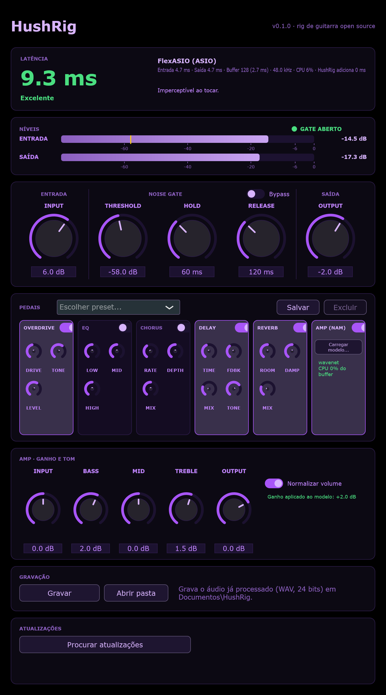

O silêncio
do seu rig.
Toque direto no PC sem chiado e sem atraso. Noise gate com zero de latência, pedais, amp sim com Neural Amp Modeler e gravação em WAV, numa janela só.
v0.2 · AGPL-3.0 · O instalador não é assinado, o SmartScreen pode avisar sobre editor desconhecido.
Chiado e atraso.
Guitarra direto no PC costuma dar duas dores de cabeça. Chiado, por causa de captadores single-coil, ganho alto e ruído de USB. E latência, porque os drivers padrão do Windows usam buffers grandes.
O HushRig usa um gate sem lookahead, que não soma atraso, e um caminho de áudio pensado para ASIO, com o FlexASIO já no instalador.
Tudo que um rig precisa.

Noise gate
Threshold, hold e release, com indicador de gate aberto ou fechado no medidor.
Amp sim NAM
Modelos .nam com gain, graves, médios, agudos, volume normalizado e medidor de CPU.
Pedais
Overdrive, EQ, chorus, delay e reverb. Arraste os blocos para reordenar a cadeia.
Medidores
Latência informada pelo driver (entrada, saída, buffer, CPU) e níveis de entrada e saída.
Presets
De fábrica e de usuário. Guardam pedais, ordem e modelo de amp.
Gravação
WAV 24-bit do áudio já processado, salvo em Documentos\HushRig.
Interface
Tema preto e roxo com knobs rotativos. Os cards se reorganizam em 1, 2 ou 3 colunas.
Atualização
Checa o GitHub ao abrir, confere o SHA-256 e instala a nova versão.
Do instalador ao primeiro acorde.
Instale
Rode o HushRig-Setup-x.y.z.exe e escolha app, plugin VST3 e FlexASIO.
Configure
Em Options, escolha ASIO → FlexASIO, defina entrada e saída e desmarque Mute audio input.
Latência
Comece com buffer de 256 amostras e reduza até o áudio estalar.
Gate
Suba o Gate Threshold até o chiado sumir. Se cortar as notas, aumente o Release.
Use fones de ouvido para evitar microfonia.
Compile você mesmo.
# compilar cmake -B build -DCMAKE_BUILD_TYPE=Release cmake --build build --config Release # testar ctest --test-dir build -C Release --output-on-failure # custo de CPU de um modelo NAM build/Release/hushrig_ampbench.exe meu-modelo.nam 48000
- ✓Gate, instalador com FlexASIO e atualização no app
- ✓Medidores, pedais, cadeia reordenável e presets
- ✓Gravação WAV e amp sim NAM
- ◦Interface própria com pedais visuais
- ◦Pedal de hardware com ESP32-S3 (cerca de US$ 14, Bluetooth). Esquema, PCB e firmware prontos; falta testar em placa real.
Menos chiado.
Mais guitarra.
Grátis e open source, sob AGPL-3.0. Issues e pull requests são bem-vindos.